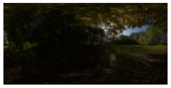
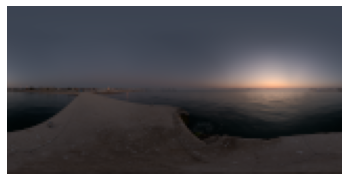
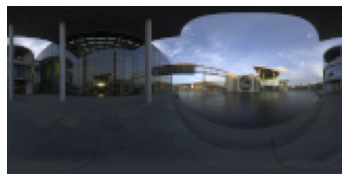
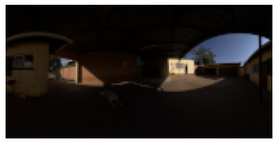

Results
* We recommend using the Chrome or Safari browser to correctly display all visuals.
Intrinsic decomposition

Novel View Synthesis on an input light direction
Decomposition
Diffuse Reflectance
Directional Scat.
Direct Light Transport
Indirect
NVS from Environment-Maps




Detailed Results -- Directional Lights
RGB
Diffuse Reflectance
Directional Scat.
Direct Light Transport
Indirect
RGB
Diffuse Reflectance
Directional Scat.
Direct Light Transport
Indirect
RGB
Directional Scatering (Note the moving highlights)
Near Point Light Relighting
Intrinsic field decompositions for a moving near point light, corresponding to Fig. 6 in the paper:

Point light
Diffuse Reflectance
Directional Scat.
Direct Transport
Indirect
RGB
Diffuse Reflectance
Directional Scat.
Direct Transport
Indirect
More Results with near-fied, point light relighting
Environment relighting
Comparison to state-of-the-art
Qualitative comparison in directional relighitng. In contrast to LitNeRF, the baseline methods cannot perform near-field relighting.NeRF-SHL [Li et al. ToG 2022]
NLT [Zhang et al. ToG 2021]
Ours
Ablation Study
Without dilated-mesh bounded integration
With dilated-mesh bounded integration (ours)
Without light visibility conditioning
With light visibility conditioning (ours)
Limitations
LitNeRF relies on alpha matting to segment foreground & background, inaccuracies cause backgroud regions to be included in the model or leave foreground pixels outside the fitting. The indirect chromatic radiance can present extrapolation artifacts; it would benefit from better regularization in future work.RGB
Diffuse Reflectance
Directional Scat.
Direct Transport
Indirect
Citation
@proceedings{sarkar2023litnerf,
author = {Kripasindhu Sarkar and Marcel C. Buehler and Gengyan Li and Daoye Wang and Delio Vicini and Jérémy Riviere and Yinda Zhang
and Sergio Orts-Escolano and Paulo Gotardo and Thabo Beeler and Abhimitra Meka},
title = {LitNeRF: Intrinsic Radiance Decomposition for High-Quality View Synthesis and Relighting of Faces},
booktitle = {ACM SIGGRAPH Asia 2023 Conference Papers, December 12--15, 2023, Sydney, NSW, Australia},
url = {https://doi.org/10.1145/3550469},
doi = {10.1145/3610548.3618210},
isbn = {979-8-4007-0315-7/23/12},
year={2023}}